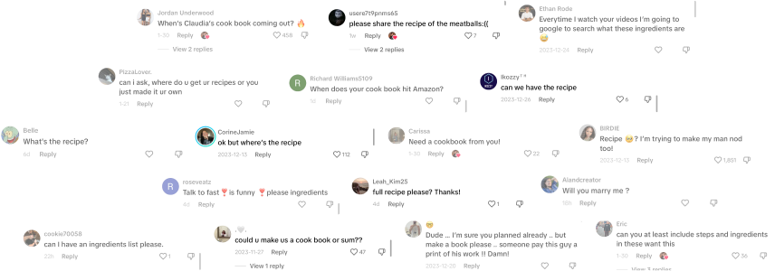
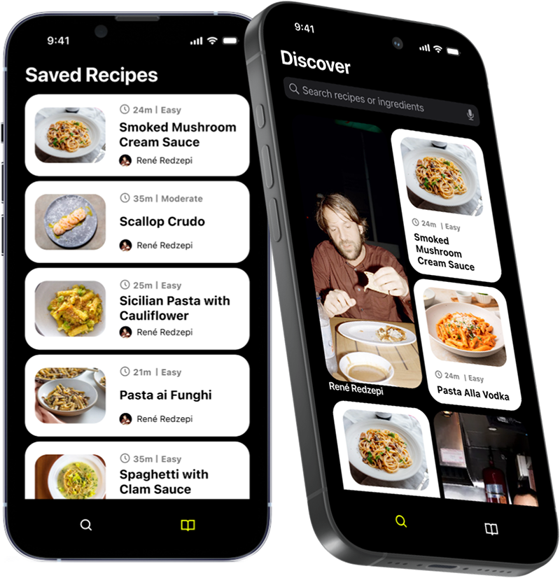

Food is a universal language.
And cooking content is everywhere.
But recipe apps are still stuck in 2001.
And nobody is helping cooking creators monetize.

We wanted a place to find good recipes that are easy to follow.
So we built one - with creators first in mind.

Because we believe that creators are the future of food.
our solution is pretty simple.
1. Create the best-in-class follow-along recipe experience for consumers, starting with a mobile app
2. Populate the app with recipes from top creators
3. Monetize via premium subscription. Fans get recipes, creators get paid
2. Populate the app with recipes from top creators
3. Monetize via premium subscription. Fans get recipes, creators get paid
our goal
1. Empower cooking creators of any size to make a living by monetizing their fanbase
2. Create the industry leading user experience for recipe consumption on mobile and beyond
2. Create the industry leading user experience for recipe consumption on mobile and beyond